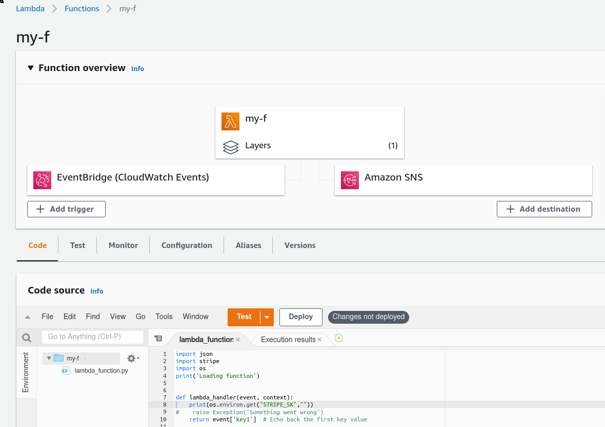

AWSTUFF
Table of Contents
1 AWS Lambda

1.1 One off simple python Lambda
Like a way to have cheap scripts that run daily, to fetch stuff from the internet and synchronize data, or smth.
Lambdas are region based, so open the region you want to run in.
1.1.1 Hello world
- Open the lambda AWS cli
- Create Function
- blueprint: hello-world-python
- name: my-f
- next, next, next, TEST.
- yay
Things to take into account are that the lamdba is called via the function
def lambda_handler(event, context): print("hello!")
The file is called lambda_function.py IIRC
1.1.2 Monitor
There are (at least) 2 ways of monitoring single executions of lambdas:
- Via cloudwatch
To get notified if it fails via cloudwatch, we'll have to create a cloudwatch alarm with thresholds of 1, and and sns with an email destination.
- Click on
monitortab. - View logs on cloudwatch
- click on the alarms on the sidebar (not really where the link brought us)
- Create Alarm
- Select metric: Lambdas->by function->my-f:Errors
- statistic: sum, period: 1m, >=1
- In Alarm, select (or create) SNS topic.
- Click on
- Via Lambda destination
- Add Destination
- on error
- sns topic
1.1.3 Schdedule
We add scheduling "triggers" from the perspective
1.2 One off not-so-simple python Lambda
Let's try to use an external lib, like stripe. For stripe you need 2 things, the lib, and the token.
import stripe def lambda_handler(event, context): print("hello!")
1.2.1 Layer vs bundling
There are 2 ways to use external libs: Bundling and using layers:
- Bundle
As they explain here, you can bundle all needed libs in the same zip together with your function.
pip install --target\"$PWD" –upgrade stripe; zip -r my-fun.zip *=. - Layers
A more sophisticated way is to upload the lib separately, and then combine your function and the layer. As explained in the official docs, your libs have to be in a concrete path so that the "main" lambda function gets them. Another example here.
Note: Check if the paths from "Layers" are also accepted in "Bundle". Maybe there's no need to put the whole thing in the same directory and we can use the same strategy. That'd make sense.
How to package a lambda with zip: https://docs.aws.amazon.com/lambda/latest/dg/python-package.html#python-package-create-package-with-dependency
echo 'stripe' > requirements.txt python -m venv venv; . venv/bin/activate pip install -r requirements.txt mkdir build/python/lib/python3.7/site-packages cp -a venv/lib/python3.7/site-packages build/python/lib/python3.7/ # cp -a venv/lib/python3.7/site-packages build/python/lib/python3.7/site-packages # cd bui cd build; zip -r ../stripe.zip .
1.2.2 Env vars
Our file is now something like this
import os import stripe def lambda_handler(event, context): stripe.api_key=os.environ.get('STRIPE_SK', '') for c in stripe.Customers.list(): print('hello ', c.name)
Go to the Configuration tab, "environment variables", and add your env var.
Make sure everything is deployed, test and yay!
1.3 s3-csv-to-rds
configure an s3 repo. Create a lambda that gets triggered on put
object on that s3. Code is as follows.
import json import urllib.parse import boto3 import psycopg2 as pg2 import os import time from sqlalchemy import create_engine import pandas as pd print('Loading function') s3 = boto3.client('s3') dbname = 'csvs' user = 'postgres' host = 'database-1........us-east-1.rds.amazonaws.com' password = os.environ.get('RDS_PASS') bucket = 'metabase-testing-csv-bucket' connection_string = "postgresql://{}:{}@{}:5432/{}"\ .format(user, password, host, dbname) def create_table(key, s3_object): response = s3.get_object(Bucket=bucket, Key=key) status = response.get("ResponseMetadata", {}).get("HTTPStatusCode") if status == 200: print(f"Successful S3 get_object response. Status - {status}") engine=create_engine(connection_string) data = pd.read_csv(response.get("Body")) data.to_sql("mytable_"+ "{}".format(int(time.time())), engine, index=True, dtype=None) else: print(f"Unsuccessful S3 get_object response. Status - {status}") def do_db_things(key, s3_object): conn = psycopg2.connect(connection_string) cur = conn.cursor() cur.execute("select aws_s3.table_import_from_s3 ('public.test', '', '(FORMAT CSV, HEADER true)', bucket, 'csvs/test.csv', 'us-east-1');") cur.execute("COMMIT;") print("done?") def lambda_handler(event, context): #print("Received event: " + json.dumps(event, indent=2)) # Get the object from the event and show its content type bucket = event['Records'][0]['s3']['bucket']['name'] key = urllib.parse.unquote_plus(event['Records'][0]['s3']['object']['key'], encoding='utf-8') try: response = s3.get_object(Bucket=bucket, Key=key) print("CONTENT TYPE: " + response['ContentType']) print(response) #do_db_things(key, response) create_table(key, response) return response['ContentType'] except Exception as e: print(e) print('Error getting object {} from bucket {}. Make sure they exist and your bucket is in the same region as this function.'.format(key, bucket)) raise e
layers:
{
"Configuration": {
"FunctionName": "import-csv-to-pg",
"FunctionArn": "arn:aws:lambda:us-east-1:925001613665:function:import-csv-to-pg",
"Runtime": "python3.7",
"Role": "arn:aws:iam::925001613665:role/LabRole",
"Handler": "lambda_function.lambda_handler",
"CodeSize": 1120,
"Description": "An Amazon S3 trigger that retrieves metadata for the object that has been updated.",
"Timeout": 3,
"MemorySize": 128,
"LastModified": "2021-09-10T09:15:47.416+0000",
"CodeSha256": "/Ewv6RkZIB9ffYa0erhu+P3H7XStKwA+xZPJH689toM=",
"Version": "$LATEST",
"Environment": {
"Variables": {
"RDS_PASS": "......"
}
},
"TracingConfig": {
"Mode": "PassThrough"
},
"RevisionId": "fadff4bb-a3d1-45d5-af90-b516a1b41a4f",
"Layers": [
{
"Arn": "arn:aws:lambda:us-east-1:898466741470:layer:psycopg2-py37:3",
"CodeSize": 3241885
},
{
"Arn": "arn:aws:lambda:us-east-1:251566558623:layer:python37-layer-pandas-gbq:1",
"CodeSize": 38697072
},
{
"Arn": "arn:aws:lambda:us-east-1:925001613665:layer:sqlalchemy-python-37:4",
"CodeSize": 15804426
}
],
"State": "Active",
"LastUpdateStatus": "Successful",
"PackageType": "Zip"
},
sqlalchemy-python-37.4 is custom, using the method in from previous chapter (venv, pip, mkdir, cd, zip).
1.4 refs
2 EC2
2.1 connect to an instance via ssh (ssm?)
2.2 add/change a volume without restarting
https://aws.amazon.com/blogs/storage/migrate-your-amazon-ebs-volumes-from-gp2-to-gp3-and-save-up-to-20-on-costs/ shows how to modify a volume and change its characteristics on the fly.
3 Routing, (dns+alb)
4 Terraform
5 AIM
6 aws-mfa
7 awslogs get '/bla/my-log-group' ALL –start=1h –watch | grep '/bla/my-log-group/something' | lnav
8 AWS Batch
- https://servian.dev/getting-started-with-aws-batch-3442446fc62
- http://aws-de-marketing.s3-eu-central-1.amazonaws.com/Field Marketing/Industry-Web-Week/Presentations/Banking-Insurance-Web-Day/06_Running Batch Workloads at Scale with Containers on AWS.pdf
- https://ec2spotworkshops.com/monte-carlo-on-ec2-spot-fleet/lab4.html
- https://dev.to/christopherlai/consider-aws-batch-for-your-next-background-jobs-4725
- https://ec2spotworkshops.com/
- https://stackify.com/aws-batch-guide/
9 EBS
- https://www.metabase.com/docs/latest/operations-guide/running-metabase-on-elastic-beanstalk.html
- https://docs.aws.amazon.com/elasticbeanstalk/latest/dg/Welcome.html
- https://docs.aws.amazon.com/elasticbeanstalk/latest/dg/GettingStarted.CreateApp.html
- https://docs.aws.amazon.com/elasticbeanstalk/latest/dg/create_deploy_docker.container.console.html